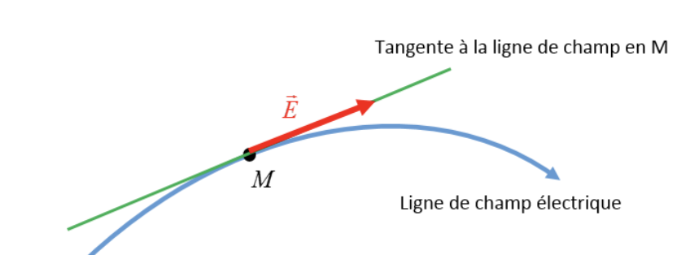
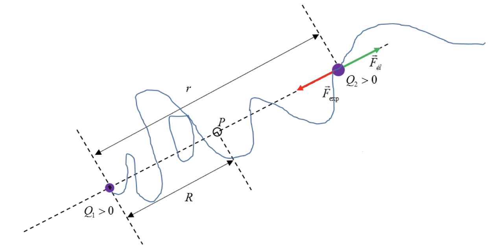

Électrostatique
Loi de Coulomb
Considérons deux charges électriques ponctuelles $q_1$ et $q_2$ séparées par une distance $r$. Pour fixer les idées nous admettons que $q_1 > 0$ et $q_1 < 0$ . Suivant Coulomb les deux charges ponctuelles s'attirent mutuellement par des forces $\overrightarrow{F_1}$ et $\overrightarrow{F_2}$ dirigées suivant la droite qui relie $q_1$ et $q_2$. Les deux forces d'interaction qui obéissent au principe de l'action et de la réaction $\overrightarrow{F_1} = - \overrightarrow{F_2}$ ont une norme commune $F = F_1 = F_2$ telle que
$$ F \sim q_1 \cdot q_2 $$et que
$$ F \sim \frac{1}{r^2} $$On obtient donc:
$$ F \sim \frac{q_1 \cdot q_2}{r^2} $$Introduisons le facteur de proportionnalité $k$:
$$ F = k \cdot \frac{q_1 \cdot q_2}{r^2} $$et vectoriellement:
$$\overrightarrow{F_1} = - \overrightarrow{F_2} = F \frac{\overrightarrow{r}}{r} = k \cdot \frac{q_1 \cdot q_2}{r^2} \frac{\overrightarrow{r}}{r} $$Champ électrique
Plaçons la charge ponctuelle $ Q > 0$ en l'origine $O$ d'un repère d'espace vide. La charge $Q$ modifie les propriétés physiques de l'espace. En effet, si nous plaçons une charge témoin ponctuelle $q_0 > 0$ en un point repéré par le vecteur-position $\overrightarrow{r}$, $q_0$ est libre en l'absence de $Q$ ; par contre, en présence de la charge $Q$ , la charge témoin subit la force de Coulomb:
$$ \overrightarrow{F} \left( \ \overrightarrow{r} \ \right) = \frac{1}{4 \pi \varepsilon_0} \frac{Q q_0}{r^2} \frac{\overrightarrow{r}}{r} $$
Pour décrire les propriétés de l'espace modifiées par la charge $Q$ , nous associons à tout point de l'espace un champ électrique caractérisé par le vecteur:
$$ \overrightarrow{E} \left( \ \overrightarrow{r} \ \right) = \lim_{q_0 \rightarrow 0} \frac{\overrightarrow{F} \left( \ \overrightarrow{r} \ \right)}{q_0} = \frac{1}{4 \pi \varepsilon_0} \frac{Q}{r^2} \frac{\overrightarrow{r}}{r} $$Remarque
Dans la définition du champ électrique nous exigeons $q \rightarrow 0$ pour garantir que la charge témoin ne perturbe pas substantiellement le champ électrique créé par la charge source $Q$.
Unité
$$ \left[ E \right] = \frac{\left[ F \right]}{\left[ q_0 \right]} = \frac{N}{C} $$ou bien:
$$ \left[ E \right] = \frac{V}{m} $$Champ électrique créé par une distribution de charges ponctuelles discrètes
Considérons la distribution de $n$ charges ponctuelles discrètes.
Cette accumulation de charges est source d'un champ électrique qui existe en tout point de l'espace. Pour déterminer les caractéristiques de ce champ électrique au point repéré par le vecteur-position $\overrightarrow{r}$ , nous plaçons en ce point la charge témoin $q_0$ et appliquons le principe de superposition pour déterminer la force électrique résultante agissant sur $q_0$:
$$ \overrightarrow{F} \left( \ \overrightarrow{r} \ \right) = \sum_{i=1}^{n} \overrightarrow{F_i} \left( \ \overrightarrow{r} \ \right) $$avec
$$ \overrightarrow{F_i} \left( \ \overrightarrow{r} \ \right) = \frac{1}{4 \pi \varepsilon_0} \frac{Q_{i}q_{0}}{\| \overrightarrow{r} - \overrightarrow{r_i} \|^{2}} \frac{\overrightarrow{r} - \overrightarrow{r_i} }{\| \overrightarrow{r} - \overrightarrow{r_i} \|} $$ainsi
$$ \overrightarrow{E} \left( \ \overrightarrow{r} \ \right) = \frac{\overrightarrow{F} \left( \ \overrightarrow{r} \ \right)}{q_0} $$ $$ = \sum_{i=1}^n \frac{1}{4 \pi \varepsilon_0} \frac{Q_{i}}{\| \overrightarrow{r} - \overrightarrow{r_i} \|^{2}} \frac{\overrightarrow{r} - \overrightarrow{r_i} }{\| \overrightarrow{r} - \overrightarrow{r_i} \|}$$et
$$ \overrightarrow{E} \left( \ \overrightarrow{r} \ \right) = \sum_{i=1}^{n} \overrightarrow{E_i} \left( \ \overrightarrow{r} \ \right) $$À l'image des forces électriques, les champs électriques obéissent eux aussi à un principe de superposition.
Champ électrique créé par une distribution de charge continue
Pour déterminer le champ électrique créé par le nuage chargé au point repéré par le vecteur-position $\overrightarrow{r}$ , nous décomposons la distribution de charge continue en des éléments de volume $d \tau$ infinitésimaux, assimilables à des charges ponctuelles.
La contribution de la charge infinitésimale $\rho \left( \ \overrightarrow{r^{\prime}} \ \right)$ à l'endroit $\overrightarrow{r^{\prime}}$ au champ électrique en $\overrightarrow{r}$ est donnée par:
$$ d \overrightarrow{E^{\prime}} \left( \ \overrightarrow{r} \ \right) = \frac{1}{4 \pi \varepsilon_0} \frac{ \rho \left( \ \overrightarrow{r^{\prime}} \ \right) d \tau}{\| \overrightarrow{r} - \overrightarrow{r_i} \|^{2}} \frac{\overrightarrow{r} - \overrightarrow{r_i} }{\| \overrightarrow{r} - \overrightarrow{r_i} \|} $$Le champ électrique total en $\overrightarrow{r}$ est obtenu en appliquant le principe de superposition : nous intégrons les contributions des différents éléments de volume qui forment la distribution de charge :
$$ \overrightarrow{E} \left( \ \overrightarrow{r} \ \right) =\underset{\begin{gathered} \text{distribution} \newline \text{de charge} \end{gathered}}{\iiint} d \overrightarrow{E} \left( \ \overrightarrow{r} \ \right) $$Représentation d'un champ électrique par des vecteurs
Pour visualiser le champ électrique associé à une charge ou une distribution de charges, on peut représenter les vecteurs $\overrightarrow{E}$ en différents points de l'espace. Illustrons la méthode, si la charge-source est la charge ponctuelle $Q>0$.
Il s'agit d'un champ électrique radial à symétrie sphérique : $E = E(r)$. Les vecteurs $\overrightarrow{E}$ divergent de la charge-source positive $Q$.
Remarque
Si $Q < 0$ , les vecteurs champ électrique convergeraient vers $Q$.
Représentation par des lignes de champ
Définition
Une ligne de champ électrique est une courbe dans l'espace qui possède la propriété qu'en chacun de ses points la direction du champ électrique correspond à la direction de la tangente à la ligne de champ au point considéré.
À toute charge ou répartition de charges correspond un spectre de lignes de champ électrique. Les lignes de champ sont orientées : par convention elles partent des charges positives pour rentrer sur les charges négatives.
Énergie potentielle électrostatique
Considérons la situation à l'instant où la charge $Q_2$ se trouve à la distance $r$ de $Q_1$ . La charge $Q_2$ subit l'action de la force électrique $\overrightarrow{F_él}$ . Si elle se déplace à vitesse constante, l'expérimentateur $\overrightarrow{F_exp} = - \overrightarrow{F_él}$ exerce la force. Pour réduire la distance entre les deux charges à $R$, il doit effectuer le travail:
$$ W_{exp} = \int_{\infty}^R \overrightarrow{F_{exp}} \cdot d \overrightarrow{r}$$ $$ = \int^{\infty}_R \overrightarrow{F_{él}} \cdot d \overrightarrow{r}$$ $$ = \frac{Q_1 Q_2}{4 \pi \varepsilon_0} \int^{\infty}_R \frac{1}{r^2} \cdot d r $$ $$ = \frac{1}{4 \pi \varepsilon_0} \frac{Q_1 Q_2}{R} $$ L'énergie potentielle électrostatique emmagasinée dans le champ électrique de la configuration de charges $(Q_1, Q_2)$ vaut ainsi:
$$ U = \frac{1}{4 \pi \varepsilon_0} \frac{Q_1 Q_2}{R} $$